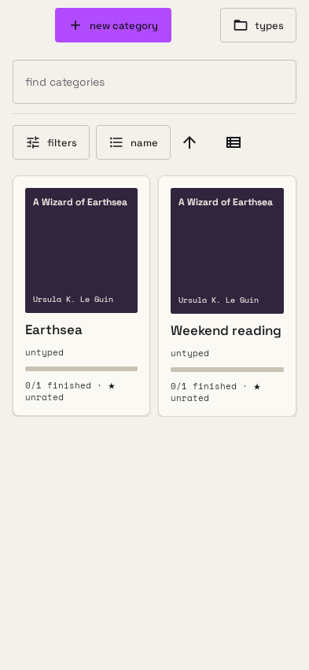
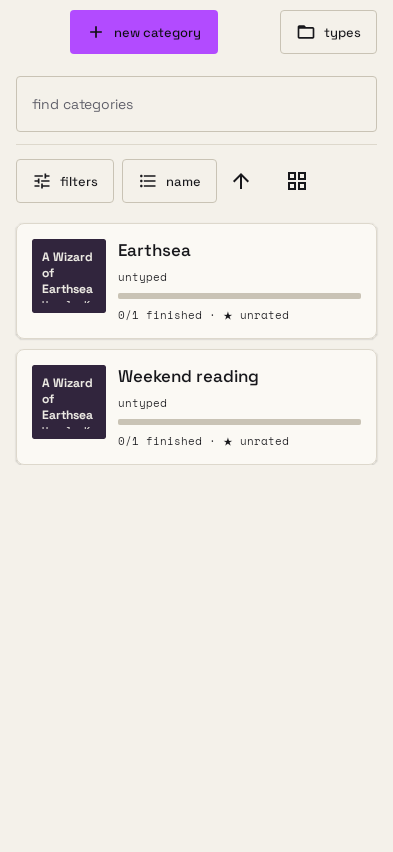
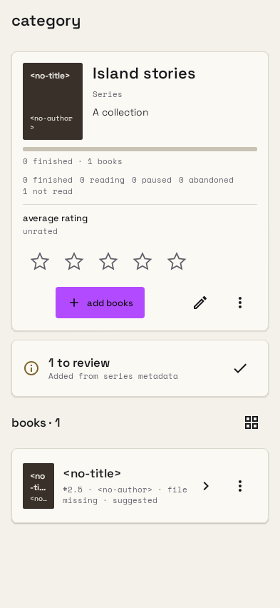
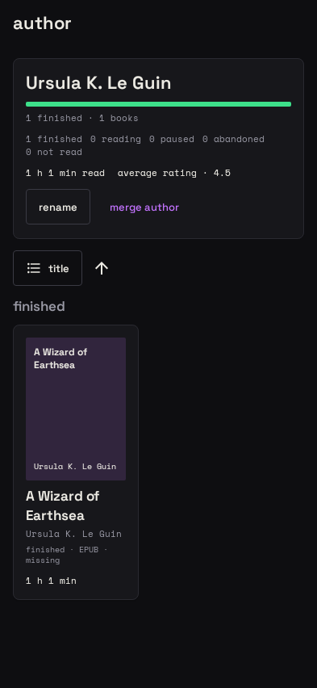
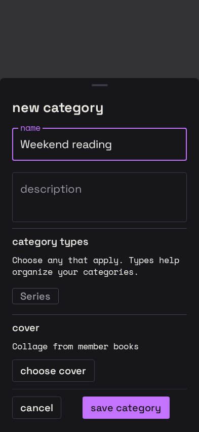
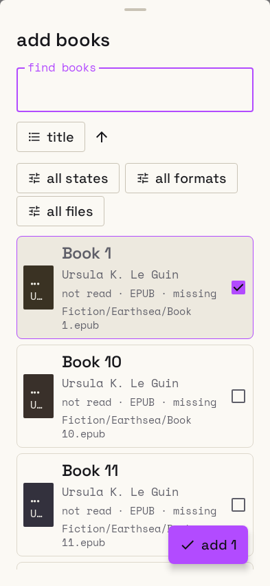
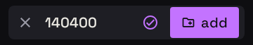
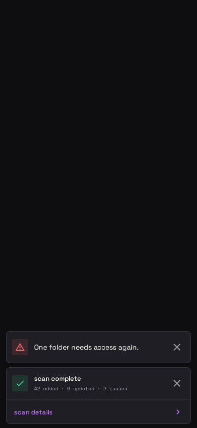
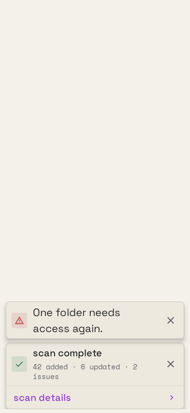

M4 review fixes · 0.4.1
Native Compose/Robolectric captures of the implemented screens. Device motion, keyboard behavior and acceptance remain in the test checklist.

Category actions and browse controls, paper theme.

Compact list with covers.

Identity, rating, review and visible ordering.

Author book sorting, ink theme.

Grouped editor with anchored actions, 150% text.

Book picker with fixed confirmation, 150% text.

140,400 selected, 150% text.

Scan notice hierarchy, ink theme.

Notices at 150% text, paper theme.
Device checklist · Validation record